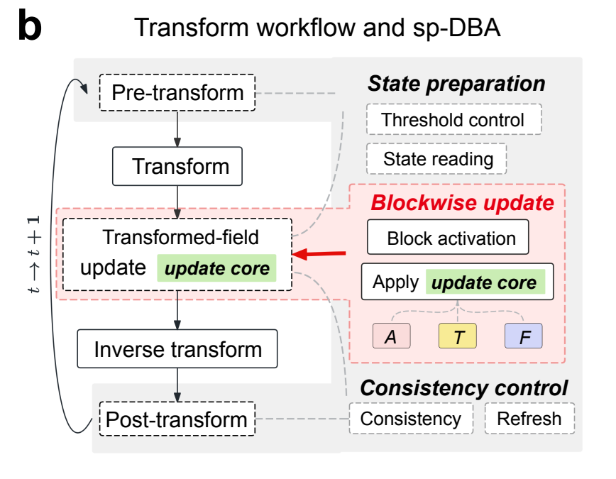

Research
My research asks how to make large-scale physical simulations more efficient without changing the underlying models. I develop solvers, adaptive algorithms, and parallel implementations, then turn simulated fields into grain statistics. This work led to sp-DBA, a framework for adaptive transform-domain computation in materials, pattern formation, and optics.
DBA · Prior work

Phase-field models track evolving structures through continuous fields, but large simulations waste substantial work on regions that barely change. Adaptive mesh refinement reduces this waste, although its changing hierarchies can complicate GPU execution. Ruoyao Zhang and Yang Xia developed DBA to adapt computation on a fixed grid, using hardware-aligned blocks and shared-memory activation decisions. In dendritic-growth tests, DBA concentrated updates near evolving interfaces while retaining the full-update morphology and tip-growth accuracy. Overlapping computation and communication enabled near-ideal scaling to 32 GPUs.
Ruoyao Zhang and Yang Xia. A dynamic block activation framework for continuum models. Nature Computational Science 5, 345–354 (2025).
sp-DBA

I led the design and implementation of sp-DBA with Prof. Yang Xia, bringing hardware-aware adaptivity to transform-domain computation. DBA can leave quiet spatial regions idle, but each Fourier mode spans the whole domain, so its local activation rules cannot simply carry over. We instead adapt which transformed-field blocks are updated while preserving the numerical representation, making this strategy reusable across physical simulations and signal processing.
Hardware-aligned blocks reduce work and thread divergence.
Adaptive updates complement optimized transforms and distributed FFTs.
Solver compatibility preserves equations, discretization, and transformed representations.
Modular integration reuses solver cores with limited model-specific changes.


We tested the framework in phase-field crystal (PFC) models for materials, reaction–cross-diffusion (RCD) for biological patterns, and digital backpropagation (DBP) for optical communications.
Distributed PFC tests on one to eight A800 GPUs reduced per-GPU update time by about 2–3× over Regular under weak scaling. Global transforms and communication remained the main overall cost.
Jingkun Jiang, Pingchuan Deng, and Yang Xia. sp-DBA: a general framework for adaptive transform-domain computation. Preprint (2026).
Phase-field crystal (PFC)
Materials science · Polycrystalline coarsening


Classical single-mode PFC model. ψ is the continuous atomic-density field and ℱ the free energy; the conserved dynamics evolve ψ toward lower free energy.
Phase-field crystal (PFC) models resolve atomic-scale periodic order while following microstructure evolution over diffusive times. Their high-order dynamics suit Fourier pseudo-spectral methods. I implemented the solvers and sp-DBA integration, then compared polycrystalline evolution and grain statistics with full-update (Regular) simulations. The figure connects the density field to its Fourier amplitude and the blocks selected for computation.

Reaction–cross-diffusion (RCD)
Biological pattern formation


Reaction–cross-diffusion model. u contains component concentrations, D couples their diffusion, and R(u) describes interactions between components, as in biological pattern formation and population dynamics.

Reaction–cross-diffusion (RCD) models describe how interacting species and coupled transport generate biological patterns. I implemented the multicomponent solver and combined sp-DBA with matrix eigendecomposition to reduce repeated Fourier-space work. The figure shows eight-component pattern formation. For 48 components, the combined optimization achieved a 28.1× update-stage speedup over the direct-matrix Regular baseline.
Digital backpropagation (DBP)
Optical communications

The forward multimode nonlinear Schrödinger equation evolves optical envelopes E over distance z and retarded time t. Its terms give loss α, dispersion β₂, mode coupling K, and Kerr nonlinearity γ. I is the identity matrix. DBP approximates the inverse propagation.

Digital backpropagation (DBP) numerically reverses optical-fiber propagation to recover signals distorted by dispersion, mode coupling, and nonlinear effects. I implemented the split-step solver and adaptive frequency-domain updates. The figure shows how activation follows occupied spectral bands. With controlled Gaussian wave packets, sp-DBA reached an 8.4× overall speedup over full-update Regular.
FFT & Distributed FFTs

I tried writing an FFT library and comparing it with FFTW to understand how a high-performance algorithm is implemented. Working through Cooley–Tukey decomposition, bit-reversal reordering, and memory access made the connection between the mathematics and runtime much clearer.
I also implemented a distributed PFC solver with local cuFFT transforms and MPI redistribution, then adapted sp-DBA’s block-state exchange to the slab layout. These tests separated local update savings from the communication cost of a global FFT.
Computational Materials
Grain boundaries & defects
Phase-field crystal (PFC) · From density fields to grain statistics

For single-layer PFC fields, I built a pipeline from continuous density to grain statistics. C++/CUDA routines extract density peaks and export atomic coordinates, in-plane orientations, and quaternions. My Python algorithm reconstructs grains and computes areas and grain-size distributions (GSDs), while OVITO lets me inspect the particle data. The workflow links particle-level structure to grain-scale statistics.
Amplitude phase-field crystal (APFC)


Complex amplitudes reconstruct around its mean . Vectors define lattice waves, is the Fourier wavevector, and controls ordering. Distinct indices label the three amplitudes; hats indicate Fourier transforms and stars complex conjugation.
APFC follows slowly varying complex amplitudes instead of resolving every atomic-density oscillation, allowing larger-scale simulations while retaining the underlying lattice. I implemented the amplitude equations in Fourier space and reconstructed density to inspect grain contact. The approximation is best suited to smoothly varying envelopes and modest lattice distortions. Sharp variations near interfaces and defect cores need careful resolution, so their detailed structure cannot be assumed accurate from coarse amplitude fields alone.

Structural phase-field crystal (XPFC)


Here is the density deviation, the free energy, and the two-point correlation function. Its Fourier transform selects preferred lattice length scales. The nonlocal convolution becomes multiplication in Fourier space.
Structural phase-field crystal (XPFC) models extend PFC by replacing its simple spatial operator with a nonlocal correlation kernel. The kernel encodes preferred length scales and lattice symmetry, allowing a wider range of crystal structures. I implemented Fourier-space solvers and initialization routines to study crystal growth and polycrystalline evolution.

PF · Dendritic growth


p runs from liquid at 0 to solid at 1, while T is dimensionless temperature. Interface width ε, relaxation time τ, and directional driving m govern growth. The temperature equation includes released latent heat.
Phase-field models describe moving solid–liquid interfaces without explicitly tracking their geometry, making them useful for studying solidification and dendritic microstructures. In Kobayashi’s model, a phase field couples crystal growth to heat diffusion, while directional driving controls the preferred branching directions. I implemented the three-dimensional finite-difference solver and built OpenMP, MPI, and CUDA versions. The examples compare how anisotropy, temperature sensitivity, seed size, and undercooling affect the simulated morphology.

PF solver and parameter studies →
Ryo Kobayashi. A Numerical Approach to Three-Dimensional Dendritic Solidification. Experimental Mathematics 3(1), 59–81 (1994).